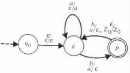
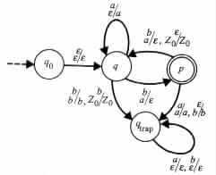
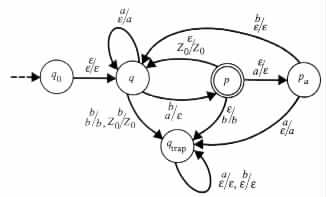
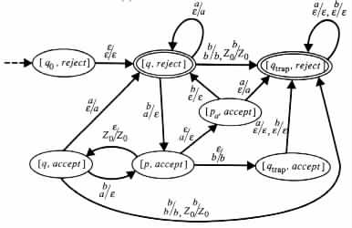

From M to Meof
Elimination of Mixed States
A Modification to Meof
A Pushdown Automaton That Accepts the Complementation of L(M)
By a proof similar to that for Theorem 2.5.1, the class of the relations computable by pushdown transducers, and consequently the class of context-free languages, are closed under union . However, these classes are not closed under intersection and complementation. For instance, the language { anbncn | n ³ 0 }, which is not context-free, is the intersection of the context-free languages { aibicj | i, j ³ 0 } and { aibjcj | i, j ³ 0 }.
Similarly, the class of relations computable by pushdown transducers is not closed under intersection with the relations computable by finite-state transducers. For instance, { (aibicj, di) | i, j ³ 0 } is computable by a pushdown transducer and { (aibjck, dk) | i, j, k ³ 0 } is computable by a finite-state transducer. However, the intersection { (anbncn, dn) | n ³ 0 } of these two relations cannot be computed by a pushdown transducer.
For context-free languages the following theorem holds.
Theorem 3.5.1 The class of context-free languages is closed under intersection with regular languages.
Proof Consider any pushdown automaton M1 = <Q1, S, G, d1, q01, Z0, F1>, and any finite-state automaton M2 = <Q2, S, d2, q02, F2>. With no loss of generality assume that M2 is e free and deterministic (see Theorem 2.3.1).
The intersection of L(M1) and L(M2) is accepted by the pushdown automaton M3 = <Q1 × Q2, S, G, d3, [q01, q02], Z0, F1 × F2>. The transition table d3 contains ([q, q'], a, b, [p, p '], g) if and only if (q, a, b, p, g) is in d1, and M2 in zero or one moves can reach state p ' from state q' by reading a.
Intuitively, M3 is a pushdown automaton that simulates the computations of M1 and M2 in parallel, where the simulated computations are synchronized to read each symbol of the inputs to M1 and M2 together.
By induction on n it can be shown that M3 accepts an input a1 · · · an if and only if
both M1 and M2 accept it.
Example 3.5.1 The pushdown automaton M3, whose transition diagram is given in Figure 3.5.1(c),
The computation of M3 on input abba is illustrated in Figure 3.5.1(d).
The languages { aibicj | i, j ³ 0 } and { aibjcj | i, j ³ 0 } are accepted by deterministic pushdown automata, and the intersection { anbncn | n ³ 0 } of these languages is not context-free. Consequently, the class of the languages that deterministic pushdown automata accept is not closed under intersection. However, the next theorem will show that the class is closed under complementation. The proof of the theorem uses the following lemma.
Definition
A sequence of moves (uq1v, z1)  · · · (uqkv, zk) of a pushdown automaton M is
said to be a loop if k > 1, M can move from configuration (uq1v, z1) on the
same transition rules as from configuration (uqkv, zk), and z1 is a prefix of zi
for i = 2, ¼, k. The loop is said to be a simple loop, if it contains no loop except
itself.
· · · (uqkv, zk) of a pushdown automaton M is
said to be a loop if k > 1, M can move from configuration (uq1v, z1) on the
same transition rules as from configuration (uqkv, zk), and z1 is a prefix of zi
for i = 2, ¼, k. The loop is said to be a simple loop, if it contains no loop except
itself.
Lemma 3.5.1 Each deterministic pushdown automaton M1 has an equivalent deterministic pushdown automaton M2 that halts on all inputs.
Proof Let M1 be any deterministic pushdown automaton. Let t denote the number of transition rules of M1. M1 does not halt on a given input x if and only if it enters a simple loop on x. Moreover, each simple loop of M1 consists of no more than tt moves. The desired pushdown automaton M2 can be constructed from M1 by employing this observation.
Specifically, M2 is just M1 modified to use "marked" symbols in its pushdown store,
as well as a counter, say, C in its finite-state control. M2 marks the topmost symbol in its
pushdown store and sets C to zero at the start of each computation, immediately after
reading an input symbol, and immediately after removing a marked symbol from the
pushdown store. On the other hand, M2 increases the value of C by one whenever it
simulates a move of M1. Upon reaching a value of tt + 1 in C, the pushdown automaton
M2 determines that M1 entered a simple loop, and so M2 halts in a nonaccepting
configuration.
The proof of the following theorem is a refinement of that provided for Theorem 2.5.2, to show that the class of regular languages is closed under complementation.
Theorem 3.5.2 The class of languages that the deterministic pushdown automata accept is closed under complementation.
Proof Consider any deterministic pushdown automaton M. By Lemma 3.5.1 it can be assumed that M has only halting computations, and with no loss of generality it can be assumed that |g| £ 1 in each transition rule (q, a, b, p, g).
Let Meof be a deterministic pushdown automaton that accepts L(M), and that in each of its computations halts after consuming all the input. Meof can be constructed from M in the following manner. Let Meof be M initially with an added trap state qtrap, and added transition rule of the form (qtrap, a, e, qtrap, e) for each input symbol a. Then repeatedly add to Meof a new transition rule of the form (q, a, b, qtrap, b), as long as Meof does not have a next move from state q on input a and topmost pushdown content b.
Call a state q of a pushdown automaton a reading state, if a is an input symbol in each transition rule (q, a, b, p, g) that originates at state q. Call the state q an e state, if a = e in each transition rule (q, a, b, p, g) that originates at state q. If the state q is neither a reading state nor an e state then call it a mixed state.
If q is a mixed state of Meof, then each of the transition rules (q, a, b, p, g) of M that satisfies |a| = 1, can be replaced by a pair of transition rules (q, e, b, qb, e) and (qb, a, e, p, g), where qb is a new intermediate, nonaccepting state. Using such transformations Meof can be modified to include no mixed states.
Meof can be further modified to obtain a similar deterministic pushdown automaton Meof_ max, with the only difference being that upon halting, Meof_ max is in a reading state. The modification can be done in the following way.
 [p, reject]
or a
[p, reject]
or a e.
e.
A Pushdown Automaton That Accepts the Complementation of L(M)
The constructed pushdown automaton Meof_ max on a given input has a unique
sequence of moves that ends at a reading state after consuming all the input. The sequence
of moves remains the same, even when a different subset of the set of reading states is
chosen to be the set of accepting states. Thus, the deterministic pushdown automaton that
accepts the complementation of L(M) can be obtained from Meof_ max, by requiring
that the reading states of the form [q, reject] become the accepting states.
Example 3.5.2 Let M be the deterministic pushdown automaton whose transition diagram is given in Figure 3.5.2(a).
|
 (a)  (b)  (c)  (d)
|
The transition diagram of Meof is given in Figure 3.5.2(b). The transition diagram of
Meof modified to include no mixed states, is given in Figure 3.5.2(c). The transition
diagram in Figure 3.5.2(d) is of a deterministic pushdown automaton that accepts the
complementation of L(M).
The closure under complementation of the class of the languages that deterministic pushdown automata accept, the nonclosure of the class under intersection, and DeMorgan's law all imply the nonclosure of the class under union .
Corollary 3.5.1 There are languages that are accepted by nondeterministic pushdown automata, but that cannot be accepted by any deterministic pushdown automata.